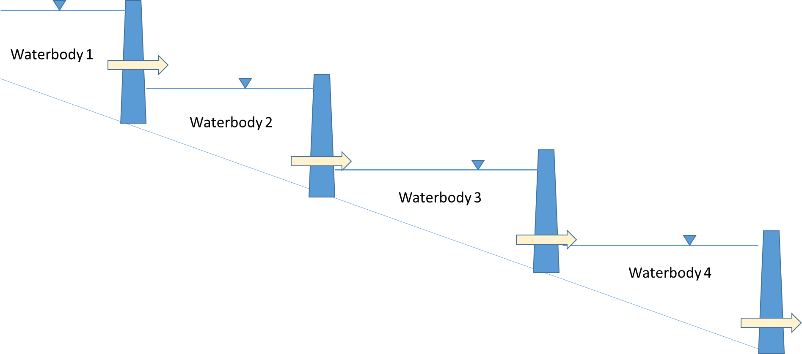
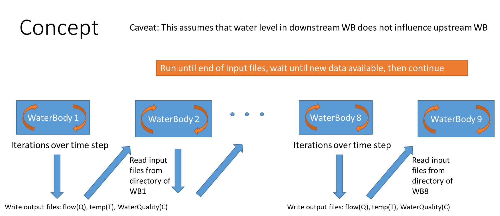

Using Multiple Processors for a Cascade of Waterbodies¶
When a model domain includes a cascade of waterbodies, such as reservoirs in series or a river system with a cascade of reaches, CE-QUAL-W2 provides a feature to reduce overall model run time by running multiple waterbodies simultaneously on separate processor cores. This approach applies when the water level in the downstream waterbody does not influence the upstream waterbody (i.e., no backwater effects).

Simulation Options¶
There are three options for simulating a series of waterbodies, summarized in Table 65.
Table 65. Techniques for using CE-QUAL-W2 to simulate a cascade of waterbodies.
| Option | Description | Advantages | Disadvantages |
|---|---|---|---|
| 1 | Single system model with multiple waterbodies and one control file | Entire model is under one control file (w2_con.npt or w2_con.csv); simpler to manage |
The time step for stability is dictated by one of the waterbodies, causing other waterbodies to run at the lowest time step. Run times may be long. |
| 2 | Separate waterbodies in separate directories; use a batch file to automatically transfer withdrawal output files from one waterbody as input to the next | Each waterbody runs according to its own minimum time step, resulting in faster simulation time compared to Option 1. [DLTMAX] can be tuned for faster runs in some waterbodies. | Must break the model into multiple models, one for each waterbody. Each waterbody must wait until the upper one is completed before starting. |
| 3 | Separate waterbodies in separate directories; use the input file w2_multiple_WB.npt to point downstream waterbodies to inflow from an upstream waterbody |
Each waterbody runs according to its own minimum time step and does not have to wait until the upper waterbody is complete before proceeding. Faster than Options 1 and 2. [DLTMAX] can be tuned for faster runs in some waterbodies. Each model typically runs on a different core of a multi-core processor. | Must break the model into multiple models, one for each waterbody. |
Option 3 allows the downstream model to run even before the upstream model has completed. The downstream model uses the input file w2_multiple_WB.npt to determine where to obtain the upstream inflow boundary conditions. The downstream code can accept inflow from both branch inflows and tributaries from other waterbodies.
In model tests with multiple waterbodies, speed improvements from 22--90% have been seen.

Warning
This approach assumes that the water level in the downstream waterbody does not influence the upstream waterbody. If backwater effects are significant, all waterbodies must be included in a single model (Option 1).
How to Set Up a Simulation¶
Set up a simulation with multiple waterbodies in separate directories. The following steps are required:
-
Set withdrawal output control for each upstream waterbody. Set [WDOC] to
ONin the control file (w2_con.nptorw2_con.csv) and set the outlet segment as a withdrawal outflow. These outflow files contain the withdrawal flows, temperatures, and/or constituent concentrations as a time series. These files serve as input to the downstream waterbody. Set the output frequency to a short time interval, since the model writes instantaneous flows, temperatures, and concentrations rather than integrated values between output times. -
Configure the downstream waterbody inflow files. For the downstream waterbody, set the inflow or tributary flow rate, temperature, and concentration file names to match the withdrawal outlet file names from the upstream waterbody. Use only the filenames (not the full directory path), since CE-QUAL-W2 copies these files into the directory of the downstream waterbody. For example, if the upstream waterbody has [WDOFN] set to
wdo.csvand the withdrawal output segment is 6, the upstream model writes output files:qwo_6.csv,two_6.csv, andcwo_6.csv. The downstream model then uses these names as [QINFN], [TINFN], and [CINFN] (respectively) if these are a branch inflow.Note
The inflow file from the upstream model and an output file for the downstream model cannot have the same name. If necessary, change the file extension for the [WDOFN] specification (e.g., from
.csvto.npt) to avoid name conflicts. -
Create the
w2_multiple_WB.nptfile. The downstream model directory must contain a file calledw2_multiple_WB.nptthat specifies information on running the series of waterbodies. See the Input File w2_multiple_WB.npt section below. -
Start the waterbody executables in sequence. Launch the upstream waterbody executable first. A dialog box for the first waterbody will appear. Then, in the downstream waterbody directory, launch the executable. Once that waterbody starts to run, launch the next downstream executable. Start each downstream waterbody executable only after the upstream model begins generating output.
-
Clean up files before restarting. Before starting a new simulation, either delete the files from upstream waterbodies in the downstream directory, or start each waterbody sequentially with enough time for a new input file to be copied to the downstream waterbody.
Warning
Files from upstream waterbodies must either be deleted in the downstream directory prior to starting a new simulation, or each waterbody must be started sequentially with enough time for new input files to be copied to the downstream waterbody.
Input File w2_multiple_WB.npt¶
The input file w2_multiple_WB.npt is a text file with the following format:
Multiple WB wait ON or OFF (only 2 spaces read)
ON
Number of input types to wait for (at least 1)
2
Specific inputs to wait for: branch inflow [BR] or trib [TR], branch/trib index number,
and directory (max 240 characters)
BR, 1, ..\WB2
TR, 3, ..\WB3
Buffer time to run program, days (wait until at least XX days available)
2
Delay time in seconds to wait for buffer and recheck
60
Each header line between data lines is used for comments and is ignored by the model. The input fields are described in Table 66.
Table 66. Description of input file w2_multiple_WB.npt.
| Variable | Description |
|---|---|
| Multiple WB wait ON or OFF | ON or OFF. Turns on or off the multiple waterbody run feature. Only the first 2 characters are read. |
| Number of input types to wait for | Number of model inputs to the downstream waterbody. Must be at least 1, but can be multiple input files. |
| Specific inputs to wait for: branch inflow [BR] or trib [TR], branch/trib index number, and directory (max 240 characters) | Specifies the directory of the upstream waterbody, whether it is a branch inflow (BR) or a tributary inflow (TR), and the branch or tributary number, followed by the directory path of that file. In the example above, a relative directory path was used. ..\WB2 means to go up one directory to a subdirectory WB2. An absolute directory path can also be used. |
| Buffer time in days | How many days of output data from the upper waterbody must be available before starting the downstream waterbody computation. |
| Delay time in seconds to wait for checking upstream boundary | The time in seconds for the downstream waterbody to pause before checking to see if the buffer time is satisfied. If one chooses a 2-day buffer time, the downstream model would check at "delay time" intervals to see if the required number of output days are complete before continuing to run. |
This file is also included in the Excel input file under the tab w2_multiple_WB.npt. Select the highlighted section in Excel and click the export button to write the text file.
Output File WaitForRunLog.opt¶
An output file WaitForRunLog.opt is produced showing how the downstream model copied files from the upstream waterbody. This file is used for debugging model errors. An example of this file is shown below:
1.0000 COPY ..\WB1\qwo_6.csv
1.0000 COPY ..\WB1\two_6.csv
Execution stopped at 10.900 WAITING FOR RESTART
10.9000 COPY ..\WB1\qwo_6.csv
10.9000 COPY ..\WB1\two_6.csv
Execution stopped at 22.350 WAITING FOR RESTART
22.3500 COPY ..\WB1\qwo_6.csv
22.3500 COPY ..\WB1\two_6.csv
Execution stopped at 32.850 WAITING FOR RESTART
32.8500 COPY ..\WB1\qwo_6.csv
32.8500 COPY ..\WB1\two_6.csv
Execution stopped at 43.080 WAITING FOR RESTART
43.0800 COPY ..\WB1\qwo_6.csv
43.0800 COPY ..\WB1\two_6.csv
Execution stopped at 53.000 WAITING FOR RESTART
53.0000 COPY ..\WB1\qwo_6.csv
53.0000 COPY ..\WB1\two_6.csv
The log shows the simulation time (in Julian days) at which each file copy occurred. When the downstream model reaches the end of available input data, it displays WAITING FOR RESTART and pauses until the upstream model has produced enough additional output (as defined by the buffer time) before continuing.
Tip
Review WaitForRunLog.opt if the downstream model appears to hang or produces unexpected results. Frequent WAITING FOR RESTART messages may indicate that the buffer time is too large or the upstream model is running too slowly relative to the downstream model.